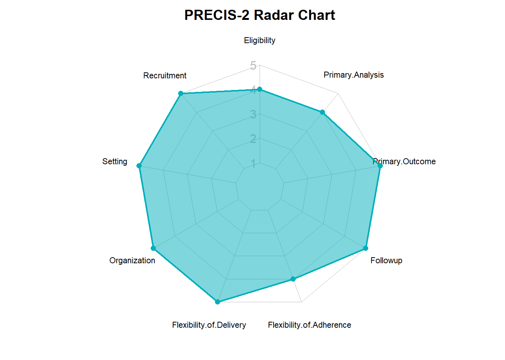

Code
PRECIS <- read_ods(
"tables.ods",
sheet = "PRECIS"
)PRECIS <- read_ods(
"tables.ods",
sheet = "PRECIS"
)PRECIS |>
kable() |>
kable_styling(latex_options = "striped")| Domain | Score | Rationale |
|---|---|---|
| Eligibility | 4 | Patients are included primarily based on disease state, and HCTZ is among the most common antihypertensive medications |
| Recruitment | 5 | Recruitment of patients occurs directly from primary care providers |
| Setting | 5 | The treatment setting is identical to the usual care setting. |
| Organization | 5 | The organization of care delivery is identical to the usual care setting. |
| Flexibility of Delivery | 5 | The flexibility of care delivery is identical to the usual care setting. |
| Flexibility of Adherence | 4 | The mechanisms for encouraging treatment adherance are nearly identical to those in a usual care setting. |
| Followup | 5 | Patient followup is identical to the usual care setting. |
| Primary Outcome | 5 | The events included in the primary outcome (MACE, mortality) are highly relavant to diverse patient populations. |
| Primary Analysis | 4 | The majority of the data collected are part of the primary analysis |
PRECIS2 <- read_ods(
"tables.ods",
sheet = "PRECIS2",
row_names = TRUE,
as_tibble = FALSE
)op <- par(mar = c(1, 2, 2, 1))
create_beautiful_radarchart(
PRECIS2,
caxislabels = c(1,2,3,4,5),
title = "PRECIS-2 Radar Chart"
)
par(op)sessionInfo()R version 4.2.0 (2022-04-22 ucrt)
Platform: x86_64-w64-mingw32/x64 (64-bit)
Running under: Windows 10 x64 (build 19045)
Matrix products: default
locale:
[1] LC_COLLATE=English_United States.utf8
[2] LC_CTYPE=English_United States.utf8
[3] LC_MONETARY=English_United States.utf8
[4] LC_NUMERIC=C
[5] LC_TIME=English_United States.utf8
attached base packages:
[1] stats graphics grDevices utils datasets methods base
other attached packages:
[1] DiagrammeR_1.0.10 fmsb_0.7.5 data.table_1.14.8 kableExtra_1.3.4
[5] knitr_1.43 readODS_2.0.0 lubridate_1.9.2 forcats_1.0.0
[9] stringr_1.5.0 dplyr_1.1.3 purrr_1.0.2 readr_2.1.4
[13] tidyr_1.3.0 tibble_3.2.1 ggplot2_3.4.3 tidyverse_2.0.0
loaded via a namespace (and not attached):
[1] tidyselect_1.2.0 xfun_0.40 colorspace_2.1-0 vctrs_0.6.3
[5] generics_0.1.3 htmltools_0.5.6 viridisLite_0.4.2 yaml_2.3.7
[9] utf8_1.2.3 rlang_1.1.1 pillar_1.9.0 glue_1.6.2
[13] withr_2.5.0 RColorBrewer_1.1-3 lifecycle_1.0.3 cellranger_1.1.0
[17] munsell_0.5.0 gtable_0.3.4 zip_2.3.0 rvest_1.0.3
[21] visNetwork_2.1.2 htmlwidgets_1.6.2 evaluate_0.21 tzdb_0.4.0
[25] fastmap_1.1.1 fansi_1.0.4 highr_0.10 scales_1.2.1
[29] webshot_0.5.5 jsonlite_1.8.7 farver_2.1.1 systemfonts_1.0.4
[33] hms_1.1.3 digest_0.6.33 stringi_1.7.12 grid_4.2.0
[37] cli_3.6.1 tools_4.2.0 magrittr_2.0.3 crayon_1.5.2
[41] pkgconfig_2.0.3 xml2_1.3.5 timechange_0.2.0 rmarkdown_2.24
[45] svglite_2.1.1 httr_1.4.7 rstudioapi_0.15.0 R6_2.5.1
[49] compiler_4.2.0